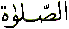

Allah loves Muhammad . Allah created Adam (
. Allah created Adam ( )
because of Muhammad
)
because of Muhammad . Allah created
the heavens and the earth and everything within because of Muhammad
. Allah created
the heavens and the earth and everything within because of Muhammad .
.
Muhammad was
born in 570 AD in Makkah. His mother's name was Aminah (
was
born in 570 AD in Makkah. His mother's name was Aminah ( ). His father's name was Abdullah
(
). His father's name was Abdullah
( ). Allah chose Abdullah (the servant
of Allah) to serve the purpose of Allah. The purpose was to be
the father of Muhammad
). Allah chose Abdullah (the servant
of Allah) to serve the purpose of Allah. The purpose was to be
the father of Muhammad  . And
Allah called Abdullah (
. And
Allah called Abdullah ( ) back
to Him after he had served the purpose. 570AD is the year of the
birth of Muhammad
) back
to Him after he had served the purpose. 570AD is the year of the
birth of Muhammad  . The Sawab (
. The Sawab ( = 500)- Reward became Ayn (
= 500)- Reward became Ayn ( = 70)- Visible and all the angels said Ameen
when Muhammad
= 70)- Visible and all the angels said Ameen
when Muhammad was born to Aminah (
was born to Aminah ( ) !
) !
Isa ( )
foretold the coming of the 'Praised One'. Ahmad - The Praised
One had finally arrived in this world. Al Hamdu Lillah
- All Praise is for Allah. What was the significance of the arrival
of Muhammad
)
foretold the coming of the 'Praised One'. Ahmad - The Praised
One had finally arrived in this world. Al Hamdu Lillah
- All Praise is for Allah. What was the significance of the arrival
of Muhammad in this world?
in this world?
If we look at the 'Message'
in the above reference we find that Allah has sent Muhammad as a Mercy for all the worlds. In some translations
we find Rahmatal
Lil Aalameen as
Mercy to creatures, in others the translation is Mercy
to mankind. There is something very subtle in the above message.
as a Mercy for all the worlds. In some translations
we find Rahmatal
Lil Aalameen as
Mercy to creatures, in others the translation is Mercy
to mankind. There is something very subtle in the above message.
If we believe that Muahammad is dead, then how can we say he is a mercy
to the worlds, or mercy to creatures or mercy to mankind? Since
humans are still being born everyday.
is dead, then how can we say he is a mercy
to the worlds, or mercy to creatures or mercy to mankind? Since
humans are still being born everyday.
If anyone answers: Well...
the implication is that the Quran is the miracle of Muhammad and so the mercy is really the guidance in
the Quran.
and so the mercy is really the guidance in
the Quran.
That is not true! The
Quran is one of the many miracles given to Muhammad by Allah, no doubt ! But... the Quran is not a mercy for all the
worlds, the Quran is not a mercy for all the creatures and neither
is the Quran a mercy for all mankind because it is clearly stated
in the Quran itself !
by Allah, no doubt ! But... the Quran is not a mercy for all the
worlds, the Quran is not a mercy for all the creatures and neither
is the Quran a mercy for all mankind because it is clearly stated
in the Quran itself !
Therefore, the Quran
is a mercy and a healing for only those who believe in the verses
of the Quran and not for all mankind ! On the other hand Muhammad is a mercy for all mankind, mercy for all
creatures, mercy for all the worlds. Now coming back to the question
we asked previously, if we believe that Muhammad
is a mercy for all mankind, mercy for all
creatures, mercy for all the worlds. Now coming back to the question
we asked previously, if we believe that Muhammad is dead, then how can he be a mercy to mankind, or the creatures
or the worlds?
is dead, then how can he be a mercy to mankind, or the creatures
or the worlds?
Let us look at the question in another way. First of all let us look at the 'nearness' of Allah to human beings:
We find that Allah is
'closer' to us than our own jugular vein. Next let us find out
how Muhammad fits in with the
greater plan of Allah with respect to 'proximity':
fits in with the
greater plan of Allah with respect to 'proximity':
Nabee Muhammad is
closer to the believers than their own selves. In other words,
our 'self' is further from us than Muhammad
is
closer to the believers than their own selves. In other words,
our 'self' is further from us than Muhammad .
Our 'self' is even further from Allah than it is from Muhammad
.
Our 'self' is even further from Allah than it is from Muhammad . Therefore to 'reach' Allah we must first
'reach' Muhammad
. Therefore to 'reach' Allah we must first
'reach' Muhammad !
!
How do we 'reach' Muahmmad ?
?
We have to send greetings
of peace and say blessings or Salawat or Darood
upon Muhammad .
.
Let us look at in another way.
If we look at the above
two references, Allah gave Musa ( )
and Haroon (
)
and Haroon ( ) the criterion
and a light and a reminder. In the second reference, Allah sent
Muhammad
) the criterion
and a light and a reminder. In the second reference, Allah sent
Muhammad as a lamp spreading light. Therefore
Muhammad
as a lamp spreading light. Therefore
Muhammad  is the lamp that spread the light
to the other Messengers of Allah (
is the lamp that spread the light
to the other Messengers of Allah ( )
even before his earthly life. If the lamp is extinguished, then
from where are we to receive the light? So how can the lamp be
extinguished ?
)
even before his earthly life. If the lamp is extinguished, then
from where are we to receive the light? So how can the lamp be
extinguished ?
Also in the above reference
we find that Allah has sent Muhammad as a witness. A witness is one who has observed or is observing!
The community of Muhammad
as a witness. A witness is one who has observed or is observing!
The community of Muhammad  is
still present, or at least I think it is! So how can Muhammad
is
still present, or at least I think it is! So how can Muhammad
 be a witness over his community
if he is dead?
be a witness over his community
if he is dead?
Here is another proof from the Quran:
The reason for covering
the above ground is because now there are some people who have
started claiming that they only believe in the Quran. They do
not believe in the Hadees and they do not believe in sending blessings
Salawat or Darood
on Muhammad . They do not even
believe in the finality of Muhammad
. They do not even
believe in the finality of Muhammad as the Messenger of Allah. So let as look at the word Salawat.
as the Messenger of Allah. So let as look at the word Salawat.
What is As Salawat ? As Salawat is the blessing. Is it not strange that Salah is spelt exactly the same as Salawat? In order to understand Salawat we must look at Salah. We have already covered Salah in a separate article on this site. PLEASE READ IT FOR YOURSELF.
Having read the article
on Salah we find that we are in fact writing
the name AHMAD with our body. So if we are writing
the name AHMAD with our body first before we get
to LILLAH then why is it wrong to say Salawat or Darood on Muhammad ?
In other words, we have to write the name AHMAD
?
In other words, we have to write the name AHMAD  The Nabee (Prophet)
is closer to the believers than their own selves so that is one form of nearness
of Muhammad
The Nabee (Prophet)
is closer to the believers than their own selves so that is one form of nearness
of Muhammad  to us than our
own selves. Then we finally come to rest in the position of Lillah
in the Salah.
to us than our
own selves. Then we finally come to rest in the position of Lillah
in the Salah.
Therefore we have to
attain first attain nearness to Muhammad  before we can attain nearness to Allah.
before we can attain nearness to Allah.
There is one deviant
sect of Muslims who call the Salah 'the Contact Prayer'. They do not
believe in sending Salawat upon Muhammad . Can they explain who are they contacting ? Unless they have
changed the body movements of the Salah
and they are writing the word CONTACT
with their bodies !
. Can they explain who are they contacting ? Unless they have
changed the body movements of the Salah
and they are writing the word CONTACT
with their bodies !
Therefore the Arabic
word Salawat is basically spelt Salat or Salah and both Salah
and Salawat draw the seeker closer to Muhammad first and then to Allah. In other words we
have to pass through AHMAD
first and then to Allah. In other words we
have to pass through AHMAD first
before we rest in LILLAH. If Allah could be approached directly
by everyone there was no need to send Messengers (
first
before we rest in LILLAH. If Allah could be approached directly
by everyone there was no need to send Messengers ( ),
Allah would have spoken to every person !
),
Allah would have spoken to every person !
In Urdu Salawat is called Darood. Why ? If we look at the word Darood it is spelt  Why
is it spelt as it is ? If we split the word Darood
into two words we get Dar
Why
is it spelt as it is ? If we split the word Darood
into two words we get Dar 
 and Wood
and Wood

 .
.
Dar means 'Place' and Wood means
'Love' . Therefore Darood is the Place of Love. Whose place
? Muhammad's  ! Whose love ?
Allah's love ! Hence the title given to Muhammad
! Whose love ?
Allah's love ! Hence the title given to Muhammad Habeeb Allah - the Beloved of Allah.
Habeeb Allah - the Beloved of Allah.
The 99 Names of Allah
have been taught to us by Muhammad .
We have to try and emulate some of the Siffat
or Names or Qualities of Allah but we must endeavour to know all
the 99 Names. For example, As
Saboor is the Patient,
we have to try and emulate the quality of patience. Then there
is the Name Al Muzill
meaning the Degrader,
we must KNOW what it means. Why ?
.
We have to try and emulate some of the Siffat
or Names or Qualities of Allah but we must endeavour to know all
the 99 Names. For example, As
Saboor is the Patient,
we have to try and emulate the quality of patience. Then there
is the Name Al Muzill
meaning the Degrader,
we must KNOW what it means. Why ?
So that we like what
Allah likes and we dislike what Allah dislikes. If we go against
this rule, then Allah will degrade us. Remeber what happened to
Shaytan - Satan when he refused to bow down to Adam ( )
? Allah wanted Shaytan to bow down to Adam (
)
? Allah wanted Shaytan to bow down to Adam ( )
whom Allah had made with His own hands, but Shaytan did not like
what Allah had made and liked. Allah degraded Shaytan !
)
whom Allah had made with His own hands, but Shaytan did not like
what Allah had made and liked. Allah degraded Shaytan !
If Allah loves Muhammad then we must also love Muhammad
then we must also love Muhammad .
There is no way out. If we do not show respect and love towards
Muhammad
.
There is no way out. If we do not show respect and love towards
Muhammad then how can we say that we like
what Allah likes?
then how can we say that we like
what Allah likes?

May Allah enlighten all the Muslims and guide them to the correct path. Ameen.
| BACK |